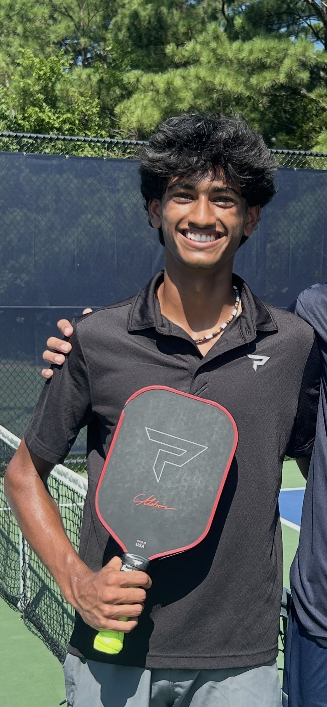

High‑Level Pickleball Training — Strategy, Technique, & Pro Insights
About Me

My name is Shriyan Avadhanula. I am a high-level pickleball player sponsored by
Paddletek, Franklin Sports, Head Racket Sports, and Acacia Sports. I created this site to improve my own
skills, track my learning, and share advanced techniques to help others reach their pickleball goals.
Advanced Dinking Techniques Overview
Effective dinking blends precision, anticipation, and strategy. Key components include:
Backhand Slice: Keeps ball low, good for defensive resets
Switching between forehand and backhand during rallies is critical for control and deception
Tip: Focus on wrist control to improve spin and precision on both sides.
Insert Forehand/Backhand Image Here
Flicks & Rolls
When a dink ball is too high, use it to attack rather than passively reset:
Flick: Quick upward motion for a fast, angled offensive shot
Roll: Controlled roll to place ball precisely over the net
Timing is critical — hit before opponents adjust
Tip: Practice flicks & rolls slowly at first to control power and accuracy.
Insert Flick/Roll Image Here
What the Pros Think
Ben Johns: Widely regarded as the #1 player in the world, Ben emphasizes tactical precision and shot variety as the keys to controlling the kitchen line. He focuses on changing pace and placement to keep opponents off balance.
Anna Leigh Waters: One of the top female professionals, Anna Leigh stresses consistent placement and awareness. Staying alert to opponent positioning is as important as technique, especially at high-speed rallies.
Federico Staksrud: An elite international competitor, Federico focuses on angled dinks that force opponents out of position. Subtle body and paddle movements disguise shots and create openings to attack.
Tyson McGuffin: A top-ranked PPA pro, Tyson highlights the importance of footwork and anticipation. Positioning often decides high-pressure points more than raw power.
Collin Johns: Consistent PPA doubles champion, Collin emphasizes strategic resets and smart placement to control the pace of rallies. Soft touches force opponents into errors while maintaining offensive potential.
Gabriel Tardio: Known for precision and consistency, Gabriel believes offensive control at the kitchen line is crucial. Well-placed dinks, combined with patience, force mistakes and create scoring chances.
Video Demonstrations
Video 1: Common Dinking Mistake → Correct Technique
Video 2: Offensive At‑the‑Line Drill
Video 3: Slow‑Motion Professional Dink Breakdown
Reflection on Personal Project
Completing this project taught me to analyze advanced techniques, organize instructional content, and share knowledge effectively.
I learned to be reflective by evaluating my own dinking skills and improving over time, and balanced by managing practice, research, and teaching.
This experience showed me the value of persistence and thoughtful strategy, traits I will carry into future projects and competitions.